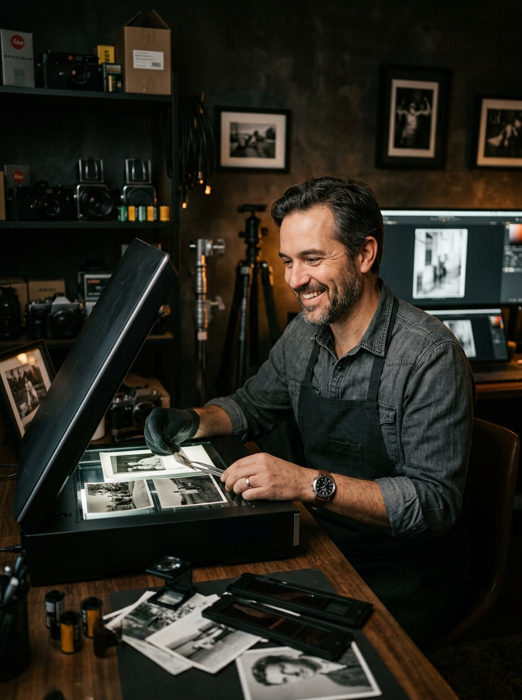

Bezcenne wspomnienia
w cyfrowej jakości
Zabezpiecz historię swojej rodziny przed upływem czasu. Oferuję profesjonalną digitalizację zdjęć, dokumentów i archiwów z wyjątkową dbałością o detale i bezpieczeństwo Twoich pamiątek.

Pasja do fotografii. Indywidualne podejście.
Nazywam się Paweł Chrobok. Zajmuję się profesjonalną digitalizacją fotografii, kładąc nacisk na jakość, a nie na masową produkcję. Każdemu zdjęciu poświęcam czas, by cyfrowa kopia oddawała duszę oryginału.
- Rzemieślnicza precyzja: Wierzę, że ożywienie starych fotografii wymaga uważności. Twoje pamiątki nie lądują na taśmie produkcyjnej, skanuję je indywidualnie, z szacunkiem na jaki zasługują.
- Najwyższa dbałość: Zanim fotografia trafi pod skaner, jest starannie przygotowywana i oczyszczana z powierzchownych pyłków.
- Korekta optyczna: Dbam o idealne kadrowanie i subtelną optymalizację kontrastu, przywracając blask nawet mocno wyblakłym kadrom.
- Gwarancja dyskrecji: Twoje zdjęcia to prywatna historia. Gwarantuję 100% poufności na każdym etapie realizacji.
Opinie klientów
Zaufali mi
Proces współpracy
Jak to działa?
Kontakt i wycena
Napisz lub zadzwoń opisz co chcesz zdigitalizować (ile zdjęć, albumów, w jakim są stanie). Przygotowuję indywidualną wycenę i ustalam szczegóły.
Wysyłka materiałów do mnie
Pakujesz zdjęcia według prostych wskazówek (patrz niżej) i wysyłasz przesyłkę kurierską lub Paczkomatem. Koszt wysyłki leży po Twojej stronie.
Skanowanie i obróbka
Każde zdjęcie układam ręcznie na skanerze, dobieram optymalną rozdzielczość, a następnie kadruję, poziomowuję i koryguję kontrast by wyciągnąć ze skanu to co najlepsze.
Odbiór cyfrowych kopii
Pliki w wysokiej rozdzielczości otrzymujesz przez bezpieczny szyfrowany link do pobrania. Na życzenie mogę też nagrać je na pendrive.
Zwrot oryginałów
Twoje oryginalne zdjęcia pakuję z najwyższą starannością i odsyłam kurierem na mój koszt. Wracają do Ciebie dokładnie w takim stanie w jakim je otrzymałem.
Poradnik pakowania
Jak bezpiecznie zapakować zdjęcia do wysyłki?
Zadbaj o to by Twoje pamiątki dotarły w idealnym stanie. Kilka prostych zasad wystarczy żeby przesyłka była w pełni bezpieczna.
Przekładaj zdjęcia
Między kolejne warstwy zdjęć wkładaj czyste kartki papieru lub bibułki. Zapobiega to sklejaniu się i zarysowaniu powierzchni fotografii.
Sztywne podłoże
Umieść zdjęcia między dwie sztywne tektury (np. z pudełka po butach). Dzięki temu przesyłka nie zgnie się podczas transportu.
Ochrona przed wilgocią
Całość włóż do foliowej torebki strunowej lub owiń w folię stretch. Chroni to materiały przed ewentualną wilgocią w transporcie.
Wypełnij puste przestrzenie
Wolne miejsce w kartonie wypełnij zmiętym papierem lub folią bąbelkową. Zdjęcia nie powinny się przesuwać w trakcie transportu.
Albumy? Żaden problem
Albumy możesz wysłać w całości nie trzeba wyciągać zdjęć. Owiń album w folię bąbelkową i zabezpiecz tak by się nie otwierał w trakcie drogi.
Oznacz przesyłkę
Naklejkę lub kartkę z napisem OSTROŻNIE ZDJĘCIA na paczce. To sygnał dla kuriera że zawartość jest delikatna i wymaga uwagi.
FAQ
Najczęściej zadawane pytania
Jak wysłać zdjęcia i czy to bezpieczne?
Zdjęcia wysyłasz kurierem lub Paczkomatem. Wyżej na stronie znajdziesz poradnik pakowania krok po kroku. Po zakończeniu pracy odsyłam oryginały na mój koszt zapakowane z najwyższą starannością. Dotychczas żadna przesyłka nie uległa uszkodzeniu.
Jak długo trwa realizacja?
Zależy od ilości zdjęć. Przy standardowym zleceniu (kilkadziesiąt do kilkuset zdjęć) zamykam się w kilka dni roboczych. Przy większych archiwach ustalamy termin indywidualnie przed rozpoczęciem pracy.
Czy poprawiacie zniszczone zdjęcia?
W standardzie każdy skan przechodzi kadrowanie, poziomowanie i korektę kontrastu. Jeśli zdjęcia wymagają głębszej renowacji (uzupełnienie ubytków, retusz rys, odbudowa brakujących fragmentów) mogę to zrobić jako usługę dodatkową. Napisz lub zadzwoń to wycenię.
W jakim formacie dostanę pliki?
Gotowe skany w wysokiej rozdzielczości (600 DPI i więcej) wysyłam przez szyfrowany link do pobrania z chmury. Na życzenie mogę też nagrać je na pendrive i odesłać razem z oryginałami.
Kontakt
+48 664 663 603
Zapraszam do kontaktu telefonicznego aby omówić wycenę Twojego archiwum.
kontakt@skanujfoty.pl
Możesz także napisać wiadomość jeśli masz szczegółowe pytania przed przekazaniem materiałów.